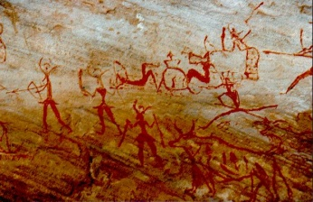
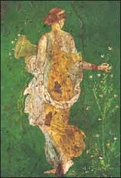
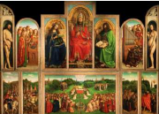
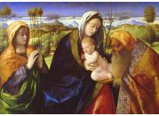
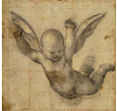
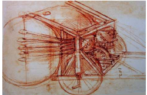
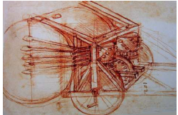
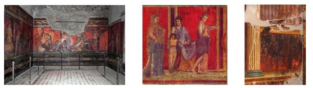
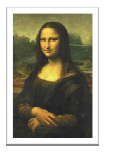
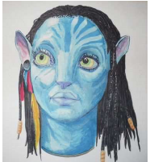

Les pigments
1) Les différentes techniques de peinture
Les peintures sont des représentations du monde. Elles sont les résultats d'une multitude d'évènements tels que les évènements historiques, les phénomènes de société, les cultures religieuses, spirituelles et les tendances philosophiques.

Dès le paléolithique il existe des représentations picturales ; elles sont le résultat de l'association des différentes argiles de couleurs, de cendres d'os, de pigments végétaux associés à de l'eau ou de la graisse.
Dans l'Antiquité, les pigments sont le plus souvent d'origine minérale. Les nuances sont obtenues par chauffage et mélange des différentes teintes. Les peintures sont plutôt murales mais de nombreux objets parchemins, vêtements sont teintés.

Au moyen âge, les techniques sont complexes, les peintures murales sont faites à sec ou bien à fresques. La peinture sur bois est une révolution très prisée car elle permet la circulation des œuvres. Les objets ainsi réalisés peuvent être embellis et enrichis par des couches de feuilles d'or. C'est le cas pour les icônes et les retables.

A la fin du XVIème siècle, la pratique dominante est la tempera. Il s'agit d'un mélange de colle ou d'eau et de pigments. Cette peinture est sensible aux variations de température et d'humidité. L'œuf est rajouté, il donne l'éclat aux couleurs et à l'émulsion. Les couleurs de la tempera sont mates..

L'aquarelle est utilisée à la Renaissance. Elle correspond à une détrempe très légère. La gouache est une tempera beaucoup plus pâteuse. Le pastel (associé aux accessoires du dessin, fusain, craie, sanguine) est broyé avec les pigments de couleurs. Le diluant étant l'eau.

Les fresques très présentes dans toute l'histoire de la peinture sont codifiées. Les pigments de terre et d'origine végétale sont dilués dans de l'eau et déposés sur un mortier de chaux éteinte, ils seront ensuite étendus. Les teintes obtenues seront le résultat de réaction entre la chaux et les pigments. Le mortier va absorber et fixer les cou
La peinture à l'huile est une nouveauté, elle fut travaillée dans les Flandres et en Italie. La technique finale apparaîtra à la fin du XVème siècle. Les recettes sont innombrables, elles font intervenir l'œuf, l'huile, le vernis. Les huiles utilisées sont l'essence de térébenthine, de lavande, de lin, de pavot, de ricin. Les supports sont nombreux ; ils peuvent être composés d'une toile de lin ou de chanvre tendue sur un châssis, mais aussi sur de la pierre, du cuivre, de l'ardoise ...Il est possible de travailler sur un fond préalablement coloré. C'est le cas de la technique de l'imprimitura.

Les techniques synthétiques se sont développées depuis la seconde guerre mondiale. Les peintures sont plus complexes. L'utilisation de matières plastiques, la stabilité des couleurs, ont permis une popularisation de la peinture et de diversifier encore plus les supports picturaux.
D'après http://www.pigmentplus.com/histoiredupigment.html
 

2) La conservation des fresques de Pompéï
L'assombrissement, jusqu'à devenir gris-noir, de la couleur écarlate du cinabre sous l'influence du rayonnement solaire constitue une importante problématique de conservation des peintures murales depuis l'antiquité et jusqu'à nos jours. Actuellement, le noircissement des fresques de la villa des Mystères à Pompéi en est la parfaite illustration.
:: 
Vitruve (architecte romain qui vécut au premier siècle après J.C) explique que : « Lorsqu'il est employé dans les appartements dont les enduits sont à couvert, le cinabre conserve sa couleur sans altération ; mais dans les lieux exposés à l'air, comme les péristyles, les exèdres, et quelques autres endroits semblables où peuvent pénétrer les rayons du soleil et l'éclat de la lune, il s'altère, il perd la vivacité de sa couleur, il se noircit aussitôt qu'il en est frappé ». Ce dernier mentionne que de la cire aurait été appliquée sur les peintures murales pour empêcher que la lumière de la lune et les rayons du soleil n'en enlèvent la couleur ; mais certains facteurs associés accélèrent ce changement chromatique, comme une forte humidité associée à une atmosphère fortement polluée. Seule la surface est dégradée, si elle est grattée, on peut apercevoir à nouveau la couleur rouge. Cette dégradation spécifique au cinabre rouge peut aussi permettre son identification.
D'après Wikipédia.
Question : D'après le texte ci-dessus, quels sont les paramètres qui peuvent altérer les peintures ?
2.1) Influence de la lumière
Expérience :
Dans une coupelle contenant de la solution de chlorure de sodium, ajouter une solution de nitrate d'argent.
Observer
Laisser reposer la coupelle à la lumière du jour. Observer.
2.2) Influence de l'humidité
Expérience :
Ajouter quelques gouttes d'eau distillée sur du sulfate de cuivre anhydre contenu dans une coupelle.
Observer :
2.3 Influence de la température
Expérience :
Dans un tube à essais contenant quelques mL d'éthanol, ajouter une petite spatule de chlorure de cobalt.
Mélanger à l'aide d'une tige de verre pour homogénéiser.
Observer.
Ajouter de l'eau distillée.
Observer.
En le tenant à l'aide d'une pince de bois, chauffer le tube à essais sur un bec électrique.
Observer.
Après léger refroidissement et avec précaution, immerger le tube à essais dans un bain eau-glace. Observer.
2.4) Influence de l'acidité
Expérience :
On dispose de jus de chou rouge obtenu par cuisson de chou dans de l'eau, d'une solution d'acide chlorhydrique à 0,1 mol.L, d'une solution de soude à 0,5 mol.L et d'eau de Volvic.
A l'aide de burettes graduées, réaliser les mélange suivants dans des tubes à essais puis compléter la ligne pH et conclure.

Rappel :
-
Si pH \< 7 : la solution est acide ;
-
Si pH = 7 : la solution est neutre ;
-
Si pH > 7 : la solution est basique.
3) Dans les musées...
Dans quasiment tous les musées, les œuvres d'art et en particulier les peintures sont exposées dans des conditions très strictes. Le degré d'hygrométrie ainsi que la température sont surveillées, l'air est filtré pour éviter toute pollution extérieure, il y a très peu de lumière directe du jour et les photographies au flash sont interdites. Il faut en fait surtout éviter les variations de ces différents paramètres.
Taux idéal d'humidité relative : 50 à 60%
Température idéale : entre 18 et 20° C
Par exemple, la Joconde est conservée à 19° et 55% d'Hr.

4) Une nouvelle technique de dessin : le feutre
4.1) Le feutre

Bien souvent, les premiers dessins réalisés par les enfants sont exécutés à l'aide de feutres. L'avantage du feutre est qu'il laisse sur le papier une trace très colorée et qu'on le trouve dans une multitude de couleurs. La technique du dessin aux feutres n'est pas réservée seulement aux enfants, elle est aussi utilisée par les plasticiens et les graphistes.

L'invention du stylo-feutre revient à la société japonaise qui le commercialisa en 1963. Nous avons vu que qu'au cours de l'histoire, les artistes ont soit utilisé des matières colorantes pures soit des mélanges de matières colorantes pour créer leurs œuvres. Lorsque nous traçons une figure à l'aide d'un feutre, utilisons-nous une encre constituée d'un pigment ou d'un mélange de pigments ?
Pour répondre à cette question, nous allons réaliser une chromatographie.
4.2) Expérience et analyse
Protocole :
-
Fermer la cuve à chromatographie afin que l'intérieur de la cuve se sature en vapeurs de l'éluant.
-
Sur une plaque pour chromatographie (feuille d'aluminium recouverte de silice poreuse), tracer au crayon de papier un trait léger à environ 2 cm du bas de la feuille et y repérer 4 points équidistants.
-
Sur ces quatre points, faire une trace avec les feutres noir, bleu, jaune et rouge.
-
Déposer alors la plaque dans la cuve de manière à ce qu'elle trempe dans l'éluant mais en veillant bien à ce que les 4 taches ne soient pas immergées.
-
Attendre que le niveau de l'éluant arrive à environ 2 cm du haut de la plaque. Sortir alors le chromatogramme et y repérer, au crayon de papier, le niveau atteint par le front de l'éluant.
-
Sécher la plaque à chromatographie en l'agitant.
Question:
Comment est constituée l'encre noire ?